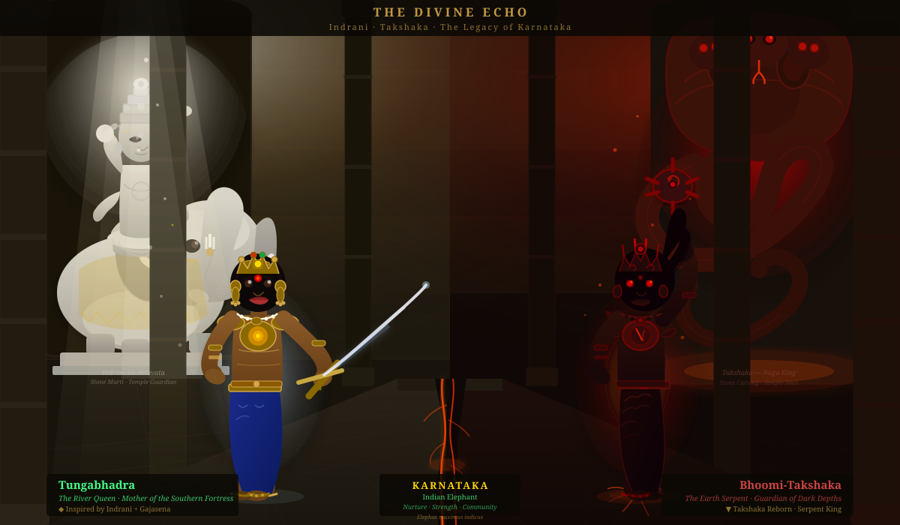

Top row: Tungabhadra the Protector • Gajasena the Sacred Elephant • Bhoomi-Takshaka the Dark Mirror
Bottom row: Weaponry comparison • The Divine Echo — Indrani/Takshaka & The Legacy (final battle scene)

Born on the banks of the Tungabhadra River during the planetary alignment called "The Elephant's Eye." She wears the mark of Indrani, Queen of Svarga — her armor channeling the divine elephant Airavata's unstoppable force. Her mace Gajadanda is topped with a bronze elephant head, and in the field she commands both ground combat and a cybernetic elephant battle companion.

Top left: Traditional warrior form with Gajasena leading a charge.
Bottom left: Bonding with the sacred elephant — the source of her Gaja-Trance power.
Top right: Modern-day face-off on the Tungabhadra bridge with Bhoomi-Takshaka.
Bottom right: The villain unleashing earth-shatter power in the city.

The sacred Indian Elephant, equipped with cybernetic armor for the modern age of Hulmane-The-Saga. Gajasena carries Holo-display panels, seismic sensors in his feet that relay battlefield data to Tungabhadra, and armor plating layered like temple stone. He is the living weapon and the sacred symbol of Karnataka.

Left to right: Tungabhadra (Heroine) — Sacred Elephant — Ravana-Putra (The Villain) — The Sacred Elephant as Dark Spirit — Shila-Rakshasa (The Stone Demon) — Sage Vidyaranya (The Guru). Each character represents a different facet of the Karnataka kingdom's conflict between dharma (sacred bond with nature) and adharma (exploitation and conquest).
The shadow version of Tungabhadra. She shares the same elephant bond — but where Tungabhadra reads the earth to protect, Bhoomi-Takshaka weaponizes it to destroy. Her power: she can crack open the ground beneath any city. Inspired by the Naga King Takshaka from the Mahabharata — the serpent of inevitable doom.

The human face of evil in Karnataka's story. A dark warrior who commands the Shila-Rakshasa stone demon and leads the forces that seek to mine and exploit the Western Ghats. His weapon glows with stolen dark energy. Inspired by the Mahabharata's Duryodhana — powerful, intelligent, convinced of his own righteousness, yet consumed by corruption.

An ancient golem-demon awakened from the buried temple beneath the Western Ghats. The very creature the ancient civilization sealed the temple to contain. Made of living stone and iron ore. Can only be stopped by the Gajadanda's elephant-memory — because only an elephant's ancient wisdom knows how the Rakshasa was sealed the first time.

The glowing spirit-guru of Karnataka — the historical founder of the Vijayanagara Empire appears as a luminous spectral sage by the Tungabhadra River. He appears to Tungabhadra in her darkest moments, showing her visions of the ancient buried temple, revealing the Shila-Rakshasa's weakness, and channeling the wisdom of thirty thousand years of Hampi's sacred rock paintings. Inspired by Vyasa from the Mahabharata — the unseen hand that guides without interfering.

The full world of Karnataka's story spans beyond hero and villain. Each character serves a dharmic purpose: Neelakantha (tech scout), Hampi-Veera (parkour warrior), Mysuru-Dhanush (archer specialist), The Mining Consortium Agent (corporate antagonist), Battle-Scarred Zealot (corrupted soldier), Grandmother (keeper of village oral history), Chief Engineer of New Hampi, and the Encrypted Mesh Network Operator — a hacker protecting the underground maps.

SVG temple scene — Indrani on Airavata (divine guardian, left) · Two warriors facing off in the ancient temple · Takshaka carved in stone (right) · Villain redesigned with natural hair, serpent only on armor & weapon
| Type | Tungabhadra (Hero) | Bhoomi-Takshaka (Villain) | Ravana-Putra |
|---|---|---|---|
| Traditional | Gajadanda — "Elephant's Trunk" war mace with bronze elephant head | Visha-Danda — Serpent-tipped mace. Carved serpent eye on head. Causes earth cracks on impact | Dark energy staff with stolen sacred power from the buried temple |
| Modern Upgrade | ⚡ Cybernetic Gajadanda with underground seismic sensor array — detects enemy positions through earth vibration | ☠ Seismic tremor mace — causes localized earthquakes, fires nano-toxin that dissolves building foundations | ☠ Corrupted ancient tech weapon — amplifies dark energy stolen from the buried temple artifact |
| Animal Companion | Gajasena — Indian Elephant with cyber-armor seismic battle net. Channels 1,000 years of elephant battle memory | Dark Elephant Spirit — same Gajasena but corrupted. Memory becomes obsession. Strength becomes ruin | Commands Shila-Rakshasa — ancient stone golem from the buried temple |
| Special Power | Gaja-Trance: enters timeless elephant memory — becomes immune to pain, can predict every move on the battlefield | Earth Swallow: the ground opens beneath any target. The dark elephant drags them underground. No return | Temple Curse: absorbs power from the buried temple artifact, becoming progressively more unstoppable |
Tungabhadra's scouts notice the king cobras of the Western Ghats are vanishing — not dying, not migrating. They follow and discover a fissure in the ancient Bhimbetka rock. Below: a buried temple, perfectly preserved, guarded by hundreds of snakes. Inside: two artifacts of immense power.
Tungabhadra seals the tunnel. But Ravana-Putra, head of the Mining Consortium, has been watching. He sends Bhoomi-Takshaka to retrieve the artifacts by splitting the earth open from below — the same power the temple was sealed to contain.
When the temple seal breaks, Shila-Rakshasa — the ancient stone demon — rises from the ruins. Neither hero nor villain can stop it alone. Sage Vidyaranya appears to Tungabhadra by the river, showing her the ancient method: the Gajadanda's elephant memory contains the first sealing ritual.
In the ancient temple hall — beneath the stone murti of Indrani on her elephant Airavata, facing the carved Takshaka serpent — Tungabhadra and Bhoomi-Takshaka confront each other for the last time. The same elephant. Two dharmas. One temple. This is The Divine Echo.
Tungabhadra must choose: seal the temple again (and lose Gajasena, who must become its eternal guardian), or destroy the artifacts (and risk Shila-Rakshasa escaping permanently). The people of Karnataka will bear the consequence of her choice for generations.